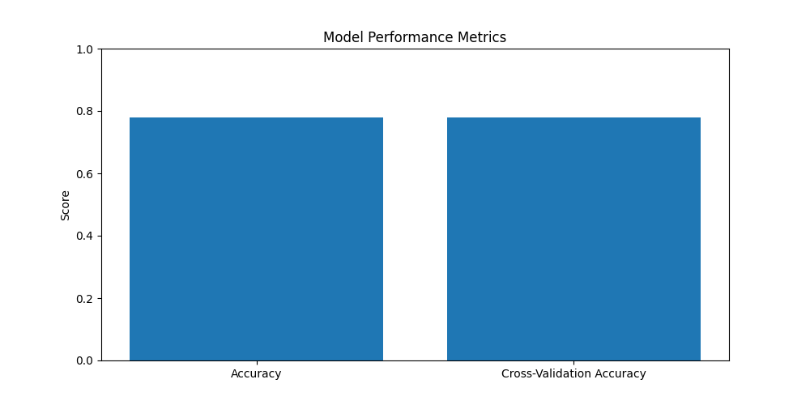
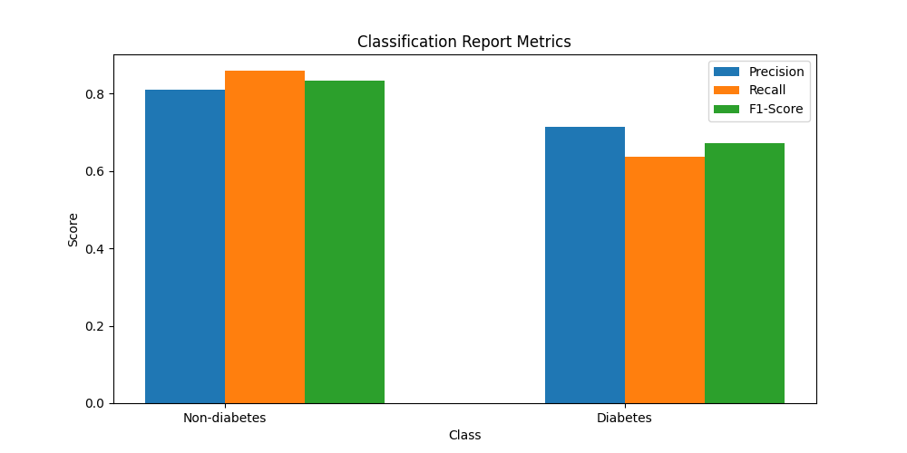
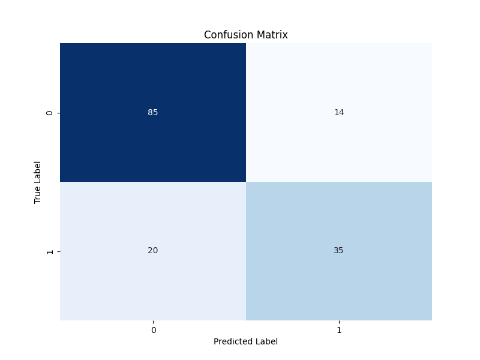

Model Evaluation
Accuracy: 0.7792207792207793
Cross-Validation Accuracy: 0.7785285885645742
Classification Report:
| Class |
Precision |
Recall |
F1-Score |
| 0 (Non-diabetes) |
0.81 |
0.86 |
0.83 |
| 1 (Diabetes) |
0.71 |
0.64 |
0.67 |
Confusion Matrix:
|
Predicted 0 |
Predicted 1 |
| Actual 0 |
85 (TN) |
14 (FP) |
| Actual 1 |
20 (FN) |
35 (TP) |



Confusion Matrix Description:
The confusion matrix is a table that is often used to describe the performance of a classification model on a set of test data for which the true values are known. Each row of the matrix represents the actual class (or ground truth) of the instances, while each column represents the predicted class by the model.
Accuracy Description:
The accuracy is the proportion of correctly predicted outcomes out of the total number of predictions made. In this case, the model correctly predicted the outcome (diabetes or non-diabetes) for approximately 78% of the samples.
Cross-Validation Accuracy Description:
The cross-validation accuracy is the average accuracy of the model across multiple training and testing splits of the dataset. It provides an estimate of how well the model is expected to perform on unseen data. Here, the cross-validation accuracy is approximately 77.9%.
Classification Report Description:
The classification report provides a detailed summary of the model's performance for each class (diabetes and non-diabetes). It includes the following metrics:
- Precision: The proportion of true positive predictions out of all positive predictions made. Higher precision indicates fewer false positives.
- Recall: The proportion of true positive predictions out of all actual positive instances. Higher recall indicates fewer false negatives.
- F1-score: The harmonic mean of precision and recall, providing a balance between the two metrics.
- Support: The number of actual occurrences of each class in the test set.
Confusion Matrix Description:
The confusion matrix is a table that visualizes the performance of a classification model. It compares the actual class labels with the predicted class labels. Each cell in the matrix represents a combination of predicted and actual classes:
- True Positive (TP): Predicted diabetes correctly.
- True Negative (TN): Predicted non-diabetes correctly.
- False Positive (FP): Predicted diabetes incorrectly (actually non-diabetes).
- False Negative (FN): Predicted non-diabetes incorrectly (actually diabetes).
Confusion Matrix Results:
In the provided confusion matrix:
- There are 85 true positives (correctly predicted diabetes) and 35 true negatives (correctly predicted non-diabetes).
- There are 14 false positives (incorrectly predicted diabetes) and 20 false negatives (incorrectly predicted non-diabetes).
These results collectively provide insights into the model's overall performance, its ability to distinguish between classes, and potential areas for improvement.
Confusion Matrix Analysis:
From the confusion matrix, we can draw the following conclusions:
- Accuracy: The overall accuracy of the model can be calculated as the sum of true positives and true negatives divided by the total number of instances, which is (85 + 35) / (85 + 14 + 20 + 35).
- Precision: Precision represents the proportion of true positive predictions out of all positive predictions made by the model. It is calculated as TP / (TP + FP), which in this case is 85 / (85 + 14).
- Recall (Sensitivity): Recall measures the proportion of actual positive instances that were correctly predicted by the model. It is calculated as TP / (TP + FN), which in this case is 85 / (85 + 20).
- Specificity: Specificity measures the proportion of actual negative instances that were correctly predicted by the model. It is calculated as TN / (TN + FP), which in this case is 35 / (35 + 14).
These metrics provide insights into the model's performance in distinguishing between diabetes and non-diabetes instances.
Improvement Steps:
To improve the model's performance, consider the following steps:
- Feature Engineering: Analyze the features (columns) in your dataset and explore if there are any additional features you can create or existing features you can modify to better represent the underlying patterns in the data.
- Data Preprocessing: Review your data preprocessing steps, such as handling missing values and outliers. Ensure that your data is clean and properly formatted for the model.
- Hyperparameter Tuning: Experiment with different hyperparameters of the Random Forest model. Adjust the values of parameters like n_estimators, max_depth, min_samples_split, min_samples_leaf, and max_features to see if they impact the model's performance.
- Model Evaluation: Besides accuracy, consider other evaluation metrics such as precision, recall, and F1-score. Choose the metrics that are most important for your specific use case.
- Ensemble Methods: Explore other ensemble methods or variations of Random Forest, such as Gradient Boosting Machines (GBM) or XGBoost, to see if they provide better performance.
- Feature Importance: Analyze the feature importance provided by the Random Forest model to understand which features are contributing the most to the model's predictions and prioritize feature selection or engineering accordingly.
- Cross-Validation: Use robust cross-validation techniques to evaluate your model's performance and generalize well to unseen data.
- Collect More Data: If possible, collect more data or augment your existing dataset to provide the model with more information to learn from and improve its performance.